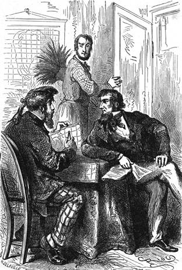

Sny Kennedyovy. – Náměstky v mnohočtu. – Domluvy Dickovy. – Procházka po mapě Afriky. – Co zbývá mezi dvěma směry kompasu. – Nynější výpravy. – Speke a Grant. – Krapf, Decken, Heuglin.
Doktor Fergusson dbal pilně, aby přípravy k odjezdu byly hotovy co nejdříve; řídil sám setrojení balonu prováděje některé změny, o nichž trval v naprostém mlčení.
Již dávno byl se jal studovati arabštinu a různá nářečí mandinská; maje vrozené nadání pro jazyky prospíval rychle.
Zatím jeho přítel lovec neodstupoval od něho ani na krok; obávalť se bezpochyby, aby se doktor nevydal na cestu bez jeho vědomí; naléhal naň posud v té věci nejpřesvědčivějšími domluvami, které Samuela Fergussona nikterak nepřesvědčily, a uchyloval se k prosbám, jež se ho nehrubě dotýkaly. Dick cítil, že se mu vymyká z rukou.
Ubohý Skot byl skutečně hoden politování; nemohl se již podívati na blankyt nebeský, aby ho nejímaly chmurné obavy; ve spaní zdálo se mu o závratném kolísání a neminulo noci, aby ve snu nepadal s ohromné výšky.
Sluší doložiti, že za těchto nočních můr spadl jednou nebo dvakrát s postele. Jeho první starostí bylo, ukázati Fergussonovi, jak silně se potloukl na hlavě.
„A přece to byly jen tři stopy výšky!“ dokládal dobromyslně, „nic více! a utržil jsem si takovou bouli! Suď pak!“
Z těchto slov vyznívala neskonalá truchlivost, ale doktora nedojala.
„Nespadneme“ řekl.
„Ale spadneme-li přece?“
„Nespadneme“
To bylo stručné a jasné, a Kennedy neměl, co by odpověděl.
Zvláště pak Dicka zlobilo to, že doktor zdál se jemu, Kennedyovi, naprosto upírati vlastní vůle; považoval za nevyhnutelné určení, že se Dick stane jeho povětrným soudruhem. O tom nebylo již nejmenší pochybnosti. Samuel nadužíval nesnesitelnou měrou náměstky v první osobě mnohočtu:
„My“ se pobereme… „my“ budeme hotovi dne… „my“ odjedeme…
Anebo přisvojovací, náměstky v jednočtu:
„Náš“ balon… „naše“ loďka… „náš“ výzkum…
A zase v mnohočtu:
„Naše“ přípravy… „naše“ objevy… „naše“ vzestupy…
Dick se toho hrozil, ač byl odhodlán zhola neodejeti; avšak nechtěl svému příteli příliš odmlouvati. Ba, přiznejme se, že si dal, sám dobře toho nechápaje, poslati ve vší tichosti z Edinburku něco vhodného šatstva a své nejlepší lovecké ručnice.
Jednou uznav, že člověk s nestoudným štěstím může míti čáku na zdar proti tisíci, tvářil se, jako by se podvoloval přáním. doktorovým; leč aby protáhl odjezd, vytasil se s celou řadou všelijakých vytáček. Rozpovídal se o užitečnosti výpravy a její včasnosti… Je-li v pravdě potřebí, aby byly nilské prameny objeveny?… Prospěje-li ten podnik skutečně blahu člověčenstva?… Vše-li se uváží, zda budou afričtí národové šťastnější, dostane-li se jim vzdělanosti? Ví-li se mimo to s jistotou, není-li vzdělanost spíše v Africe než v Evropě? … Možná…A nelze-li předkem ještě počkati?… Přechod přes Afriku bude někdy dojista vykonán, a to způsobem méně odvážným… Za měsíc, za půl roku, do roka, přibude bezpochyby některý badatel…
Tyto výklady setkaly se s účinkem přímo opačným ke svému účelu, a doktor chvěl se netrpělivostí.
„Což chceš, nešťastný Dicku, což chceš, ošemetný příteli, aby si jiný dobyl této slávy? Což mám zapřít svou minulost? couvnout před překážkami, které nestojí za řeč? odvděčit se zbabělými rozvahami za to, co pro mne učinila i vláda anglická, i královská společnost londýnská?“
„Ale“ namítl Kennedy, jenž v řeči často užíval této spojky.
„Ale“ přejal mu slovo doktor, „což nevíš, že moje cesta je zápasem o úspěch s nynějšími výpravami? Což ti není známo, že noví výzkumcové postupují do středu Afriky?“
„Nicméně…“
„Poslyš mě dobře, Dicku, a pohleď na tuto mapu.“
Dick pohleděl s odevzdaností.
„Jdi proti Nilu,“ vece Fergusson.
„Jdu proti němu,“ odpověděl poslušně Skot.
„Postup do Gondokora.“
„Jsem tam.“
A Kennedyovi tanulo na mysli, jak snadná je taková cesta po mapě.
„Vezmi jeden z hrotů tohoto kompasu,“ mluvil doktor dále a přilož jej k tomuto městu, za něž se stěží dostali i nejsmělejší.
„Je přiložen.“
„A nyní vyhledej na pobřeží ostrov Zanzibar na 6. stupni jižní šířky.“
„Mám jej.“
„Postup nyní podle toho rovnoběžníku do Kaze.“
„Stalo se.“
„Ber se vzhůru po 33. stupni délky až k cípu jezera Ukereve na místo, kde stanul poručík Speke.“
„Nuže! víš-li, čeho lze se právem domýšleti ze zpráv daných pobřežními kmeny?“
„O tom nemám ani potuchy.“
„Že toto jezero, jehož dolejší konec jest na 2° 30' šířky, vztahuje se asi rovněž o dva a půl stupně nad rovník.“
„Opravdu?“
„Z tohoto půlnočního konce pak výtéká řeka, která splývá nezbytně s Nilem, ač není-li to Nil sám.“
„Divná věc.“
„Nyní přilož druhý hrot kompasu k tomuto konci jezera Ukereve.“
„Stalo se, příteli Fergussone.“
„Kolik počítáš stupňů mezi těma dvěma hroty?“
„Sotva dva.“
„A víš-li pak, co to činí, Dicku?“
„Ani za mák.“
„To činí ledva sto devadesát pět kilometrů, to jest nic“
„Skoro nic, Samuele.“
„Víš-li pak, co se děje touto dobou?“
„Nevím, jako že jsem živ!“

„Jdu proti němu,“ odpověděl Skot.
„Nuže, poslyš! Zeměpisná společnost považovala veledůležitým výzkum tohoto jezera zahlédnutého Spekem. Pod ochranou její spolčil se poručík, nyní setník Speke se setníkem Grantem od indického vojska; postavili se v čelo četné a hojně opatřené výpravě; jich úkolem jest pustiti se po jezeře a postoupiti až do Gondokora; dostalo se jim přes pět tisíc liber podpory, a kapský guvernér přidal jim na výpomoc hottentotské vojáky; vytrhli ze Zanzibara na sklonku října 1860. Zatím dostal se Angličan John Petherick, konsul jejího Veličenstva v Chartumě, od Foreign-officeu[15] asi sedm set liber; má v Chartumě vystrojiti parník, opatřiti jej dostatečnými zásobami a odplouti do Gondokara; tam vyčká karavany setníka Spekea a bude s to, aby ji zásobil.“
„Dobře smyšleno,“ ozval se Kennedy.
„Z toho vidíš jasně, že je nakvap, ač chceme-li se státi účastnými těchto výzkumných prací. A to není vše; zatím co se postupuje jistým krokem k objevu pramenů nilských, berou se jiní cestovatelé směle do srdce Afriky.“
„Pěšky?“ otázal se Kennedy.
„Pěšky,“ odvětil doktor nevšímaje si této poznámky. „Doktor Krapf zamýšlí proniknuti na západ řekou Džubou, vlévající se do moře pod rovníkem. Baron z Deckenů vyšel z Mombasa, ohledal hory Kenii a Kilimandžaro a jest na pochodě do středu.“
„Pořád pěšky?“
„Pořád pěšky nebo na hřbetě mezků.“
„To jest mi docela jednostejno,“ odtušil Kennedy.
„Konečně,“ vykládal dále doktor, „chystá pan z Heuglinů, rakouský místokonsul v Chartumě, výpravu velice důležitou, jejímž předním účelem jest vyhledati cestovatele Vogela, jenž byl roku vyslán do Sudanu, aby se súčastnil prací doktora Bartha. Roku 1856 opustil Bornu, umíniv si prozkoumati tu neznámou zemi, která se prostírá mezi jezerem Čadským a Darfurem. Od té doby pak již se neobjevil. Listy došlé v červnu 1860 do Alexandrie oznamují, že byl zavražděn z rozkazu krále vadajského; leč jiné listy, zaslané doktorem Hartmannem otci cestovatelovu, praví podle vyprávek fulbského domorodce z Bornu, že jest Vogel pouze jako zajatec vězněn ve Vaře; pročež není ještě zmařena všecka naděje. Sestoupil se výbor za předsednictví panujícího vévody sasko-kobursko-gothského; můj přítel Petermann jest jeho tajemníkem; národní sbírkou sešel se náklad na výpravu, k níž přidružili se četní učenci; pan z Heuglinu vydal se z Massauy v měsíci červnu, a pátraje po stopách Vogelových má zároveň prozkoumati všecku zemi, rozprostírající se mezi Nilem a Čadem, to jest má spojiti podniky setníka Spekea s podniky doktora Bartha. A pak bude vykonán přechod od východu na západ.[16]“
„Aj!“ ozval se Skot, „když se to všecko daří tak dobře, co budeme dělat tam dole?“
Doktor Fergusson neodpověděv, pokrčil jenom rameny.